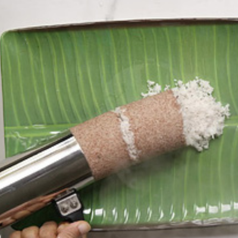
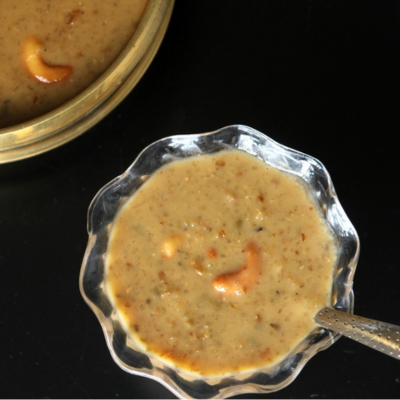

CONNECT WITH HEALTHY LIFE
CONNECT WITH HEALTHY LIFE
தேவையான பொருட்கள்:
செய்முறை:
1. பீஜே மூங்கில் அரிசியை 30 நிமிடங்கள் ஊற வைக்கவும்.
2. 5 விசில் விட்டு வேகவைத்து நன்றாக மசித்து கொள்ளவும்.
3. அதில் தேங்காய் பால் மற்றும் உப்பு அல்லது சர்க்கரை சேர்க்கவும்.
4. அதை 10 நிமிடங்கள் பின் பரிமாறவும்.

தேவையான பொருட்கள்:
செய்முறை:
1. பீஜே மூங்கில் அரிசியை 30 நிமிடங்கள் ஊற வைக்கவும்.
2. ஒரு பாத்திரத்தில் தண்ணீரை சூடாக்கி அதில் உப்பு சேர்த்துக் கொள்ளவும்
3. பின்பு பொடியாக்கிய மூங்கில் அரிசியில் வெந்நீரை சிறிது சிறிதாக சேர்த்து புட்டு மாவு பதத்திற்கு செய்து கொள்ளவும்.
4. அதனை புட்டு குழலில் சிறிது மூங்கில் அரிசி புட்டு மாவு அதன் மேல் துருவிய தேங்காயை மேல் அடுக்காக நிரப்பவும்.
5. வெந்ததும் சிறிது ஏலக்காய்த்தூள், நெய் மற்றும் நாட்டு சர்க்கரை கலந்து சூடாக பரிமாறவும்.

தேவையான பொருட்கள்:
செய்முறை:
1. பீஜே மூங்கில் அரிசியைக் கழுவி தண்ணீரில் 6 மணி நேரம் அல்லது இரவு முழுவதும் ஊற வைக்கவும்.
2.குக்கரில் மூங்கில் அரிசியை 1/2 கப் பால் மற்றும் 1/2 கப் தண்ணீர் சேர்த்து வேக வைக்கவும் .
3. மேலும் ஒரு கப் பால் சேர்த்து மிதமான தீயில் சமைக்கவும். தொடர்ந்து கிளறவும்.
4. அது மிகவும் மென்மையாக மாறும் போது ஏலக்காய் தூள் சேர்க்கவும். நன்றாக கலக்கவும்
5. அரை கப் கண்டன்ஸ் மில்க் சேர்த்து, இனிப்பை சரிபார்க்கவும்
6. இப்போது அதை ஒரு கொதி நிலைக்கு கொண்டு வந்து வெப்பத்திலிருந்து நீக்கவும்.

தேவையான பொருட்கள்:
செய்முறை:
1. பீஜே மூங்கில் அரிசியைமிதமான தீயில் வறுத்து மிக்ஸியில் குருணையாக அரைத்து கொள்ளவும்.
2.பின்பு குக்கரில் எண்ணெய் ஊற்றி, கடுகு, உளுந்து, பச்சை மிளகாய், வெங்காயம் சேர்த்து தாளிக்கவும்.
 3. வெங்காயம் பொன்னிறமாகிய உடன், தக்காளி விழுதை சேர்த்து, வதங்கியதும் காய்கறிகளை சேர்த்து வதக்கவும்.
3. வெங்காயம் பொன்னிறமாகிய உடன், தக்காளி விழுதை சேர்த்து, வதங்கியதும் காய்கறிகளை சேர்த்து வதக்கவும்.
4. பிறகு 4 கப் தண்ணீர் சேர்த்து கொதித்தவுடன் குருணையாக்கிய மூங்கில் அரிசியை சேர்த்து உப்பு கலந்து 2-3 விசில் வரை வேக வைக்கவும்.